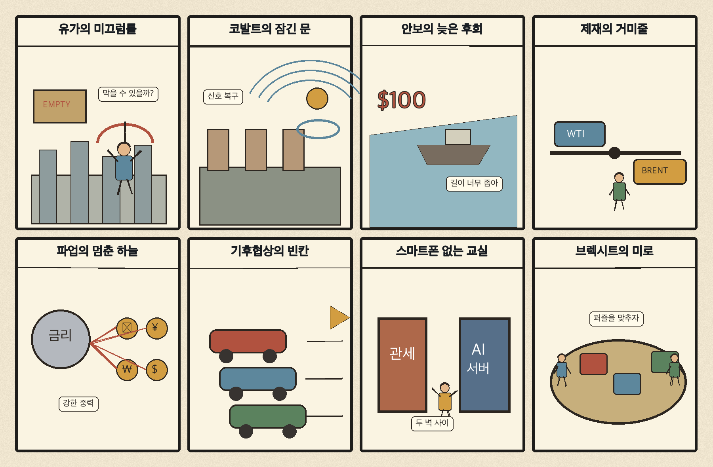
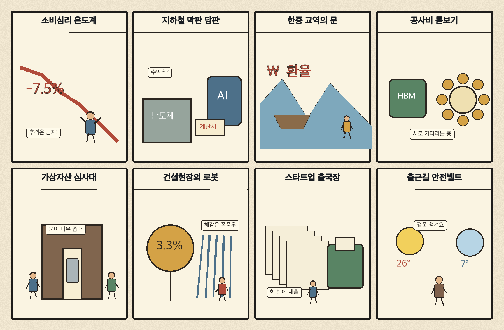

01
엔비디아 · 125.53→165.05달러 · +31.48%
내용요약 최고경영자 복귀 소식으로 전일 종가 대비 31.48% 폭등했습니다.
예상여파 국내 반도체 대형주의 심리 반등을 자극하지만 변동성 확대를 경계해야 합니다.
MORNING_BRIEFING_20261124
작성 시각: 2026-11-24 06:35 KST · 직전 미국 정규장과 2026-11-24 KST 당일 공개 기사 기준
직전 미국 정규장인 11월 23일 뉴욕증시는 다우 +3.01%, S&P 500 +4.73%, 나스닥 +6.51%로 급반등했습니다. 엔비디아 최고경영자 복귀 소식에 엔비디아는 전일 종가 대비 +31.48% 뛰었습니다. 오늘 한국장은 반도체 중심의 반등 기대가 커졌지만 전날 KOSPI가 -3.31% 하락했고 미국장 변동성도 극단적이므로 시가 급등 추격보다 외국인 현·선물 수급과 갭 유지력을 먼저 확인해야 합니다.
| 지수 | 종가 | 등락률 | 한국 증시 시사점 |
|---|---|---|---|
| 다우존스 | 49,595.31 | +3.01% | 경기민감주 심리 회복 |
| S&P 500 | 7,237.17 | +4.73% | 위험선호 급반등 |
| 나스닥 종합 | 24,089.56 | +6.51% | AI·반도체 반등 신호 |
AI·반도체 위험선호가 급격히 되살아났습니다.
최고경영자 복귀가 반등의 직접 촉매였습니다.
전날 4,708.54로 밀려 오늘 갭 유지력 확인이 필요합니다.
극단적 반전 뒤 시가와 외국인 수급을 먼저 봅니다.
11월 23일 보고서는 장전 급락 위험과 검증 표본 부족으로 공식 추천을 내지 않았습니다. 사후 급등 종목을 추천 기록에 추가하지 않습니다.
| 시장 | 종가 | 등락률 | 기준 |
|---|---|---|---|
| KOSPI | 4,708.54 | -3.31% | 11월 23일 · 시가 대비 -0.56% |
| KOSDAQ | 635.45 | -1.58% | 11월 23일 · 시가 대비 +0.08% |
| 다우존스 | 49,595.31 | +3.01% | 미국 11월 23일 정규장 |
| S&P 500 | 7,237.17 | +4.73% | 미국 11월 23일 정규장 |
| 나스닥 종합 | 24,089.56 | +6.51% | 미국 11월 23일 정규장 |
엔비디아 +31.48%, 마이크론 +19.04%, ARM +16.08%였습니다.
테슬라 +11.46%, 팔란티어 +11.06%로 위험선호가 회복됐습니다.
크라우드스트라이크는 전일 종가 대비 -8.92%로 밀렸습니다.
유가 하락 속 엑슨모빌 -1.93%, 옥시덴털 -2.23%였습니다.
내용요약 최고경영자 복귀 소식으로 전일 종가 대비 31.48% 폭등했습니다.
예상여파 국내 반도체 대형주의 심리 반등을 자극하지만 변동성 확대를 경계해야 합니다.
내용요약 메모리 반도체 위험선호 회복 속 전일 종가 대비 19.04% 올랐습니다.
예상여파 HBM·메모리 공급망의 단기 투자심리에 우호적입니다.
내용요약 AI 반도체주 동반 매수로 전일 종가 대비 16.08% 상승했습니다.
예상여파 반도체 설계자산과 고밸류 성장주의 위험선호 회복을 보여줍니다.
내용요약 파운드리 대형주가 전일 종가 대비 14.08% 반등했습니다.
예상여파 아시아 반도체 공급망 전반에 긍정적인 신호입니다.
내용요약 조사군에서 유일한 큰 폭 약세로 전일 종가 대비 8.92% 하락했습니다.
예상여파 AI 랠리가 모든 소프트웨어주로 확산되지 않았음을 보여줍니다.
미국 AI 반도체 급등은 오늘 KOSPI와 대형 반도체에 강한 반등 재료입니다. 다만 전날 KOSPI가 장중 4,586.80까지 밀린 뒤 -3.31%로 마감했고 미국 증시도 하루 만에 극단적으로 반전했습니다. 장전 급등 예상 종목은 추격하지 말고 원달러 환율, 외국인 현·선물 동반 매수, 시가 갭의 오전 유지 여부를 확인해야 합니다.
오늘은 추천 없음 — 현금 관망
엔비디아 급등은 강한 촉매지만 장전 예상 갭이 크고, 전날 국내 급락 뒤 가격 왜곡이 심합니다. 당일 시가·실시간 수급을 확인하기 전에는 종합점수 75점·상승확률 60%·예상 손익비 1.5와 30건 이상 보정 표본을 동시에 검증할 수 없습니다.
관심 연결종목 대형 반도체·HBM 공급망은 관찰 대상일 뿐 매수 추천이 아닙니다. 시가 급등 종목의 추격매수를 금지합니다.
미국 급등을 선반영한 뒤 갭을 유지하는지 봅니다.
두 시장의 동반 순매수 전환 여부를 확인합니다.
25일 파업 가능성과 출근길 대체수송을 점검합니다.
유가 3%대 하락과 원화 반응을 함께 살핍니다.
핵심 요약: 젠슨 황 복귀가 엔비디아와 나스닥을 급반등시켰지만 미국의 수출통제와 의회 조사 가능성이 동시에 부각됐습니다. 국내에서는 스마트건설·딥테크 해외진출이 확대되는 한편 AI 부정사용 방지 규칙이 새 과제로 떠올랐습니다.
내용요약 젠슨 황의 최고경영자 복귀 소식에 엔비디아가 전일 종가 대비 31.5% 오르고 나스닥도 6%대 급등했습니다.
예상여파 AI 반도체 심리는 급반등하겠지만 개인 리더십에 집중된 지배구조와 높은 변동성은 동시에 점검해야 합니다.
내용요약 미 상무부가 중국 간첩 의혹과 연관된 회사를 제재했다는 로이터 인용 보도입니다.
예상여파 엔비디아 경영진 논란이 수출통제로 번지면 AI칩 공급망과 대중 매출의 규제 위험이 다시 커질 수 있습니다.
내용요약 AI·로봇·디지털 트윈을 건설현장에 적용하는 스마트건설 엑스포가 25일 개막합니다.
예상여파 건설 자동화는 생산성과 안전을 높일 수 있지만 실제 수주·원가절감으로 이어지는지 확인이 필요합니다.
내용요약 중소벤처기업부가 초격차 스타트업의 유럽 진출을 돕기 위해 베를린에서 투자유치 행사를 엽니다.
예상여파 국내 딥테크 기업의 해외 자금·고객 접점 확대가 기대되며 후속 투자와 매출 전환이 성과의 기준입니다.
내용요약 AI를 이용해 시험에 합격했다는 온라인 자백글을 경찰이 추적하고 있으나 사실 입증에 난항을 겪고 있습니다.
예상여파 교육·채용 현장의 AI 활용 규칙과 검증 기술, 개인정보 보호 기준을 함께 정비해야 할 압력이 커집니다.
핵심 요약: 유가 하락과 코발트 수출 중단이 에너지·배터리 원재료의 엇갈린 흐름을 만들었습니다. 유럽의 우크라이나 안보 논쟁과 긴축 반대 파업, 미국의 대이란 제재는 지정학·물류 불확실성을 높이고 있습니다.
내용요약 중동 원유 공급 증가 전망으로 국제유가가 3%대 하락하며 3개월 만의 최저 수준을 기록했습니다.
예상여파 에너지 기업에는 부담이지만 항공·해운·화학과 물가에는 비용 완화 요인이 될 수 있습니다.
내용요약 세계 최대 코발트 생산국인 민주콩고가 공급과잉에 대응해 수출을 다시 중단했습니다.
예상여파 배터리 원재료 가격과 조달 일정이 흔들리며 전기차 공급망의 재고·대체소재 전략이 중요해집니다.
내용요약 독일 총리가 2008년 우크라이나의 나토 가입을 막은 결정이 실수였다고 평가했습니다.
예상여파 유럽의 대러 안보 노선과 우크라이나 협상 조건을 둘러싼 논쟁이 더 거세질 수 있습니다.
내용요약 미국이 이란의 이른바 그림자 금융망 30곳을 새로 제재했습니다.
예상여파 중동 금융·해운 거래의 제재 준수 비용이 커지고 이란과 미국의 긴장이 국제유가 변동성을 자극할 수 있습니다.
내용요약 벨기에의 긴축 반대 총파업에 관제사까지 참여하면서 항공편 운항이 마비됐습니다.
예상여파 유럽 재정긴축에 대한 사회적 저항이 물류·관광과 역내 정치 불확실성을 높일 수 있습니다.

핵심 요약: 소비심리 위축과 서울지하철 파업 가능성이 가계와 일상에 부담입니다. 한중 FTA 후속 타결은 수출 기회인 반면 주택조합 공사비와 가상자산 대주주 심사는 투명성과 규율을 강화하는 흐름입니다.
내용요약 증시 조정과 금리 상승 영향으로 소비심리가 두 달 연속 위축되고 주택가격 상승 기대도 크게 낮아졌습니다.
예상여파 내수·유통·주택 거래 회복 속도가 늦어질 수 있어 가계의 금리 부담과 고용 전망을 함께 봐야 합니다.
내용요약 서울지하철 노사가 막판 교섭에 들어갔으며 결렬되면 25일 첫차부터 파업이 예고됐습니다.
예상여파 출근길 혼잡과 버스·택시 수요 증가가 예상돼 기업과 시민의 이동 계획 조정이 필요합니다.
내용요약 한중 FTA 후속협상 타결로 K-뷰티와 여행업계가 중국 시장 재공략 기대를 키우고 있습니다.
예상여파 서비스·소비재의 중국 접근성이 개선될 수 있으나 실제 통관·수요 회복과 경쟁 강도를 확인해야 합니다.
내용요약 내년부터 주택조합도 조합원 5분의 1이 요구하면 공사비 검증을 의무적으로 받아야 합니다.
예상여파 공사비 투명성은 높아질 수 있지만 사업 일정 지연과 시공사·조합 간 갈등 가능성도 있습니다.
내용요약 가상자산사업자 28곳이 모두 신고를 마쳤고 당국은 대주주 적격성까지 심사합니다.
예상여파 업권 신뢰 제고에 도움이 되지만 규제 비용과 지배구조 요건이 중소 사업자의 재편을 촉진할 수 있습니다.
